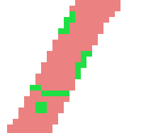
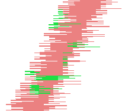
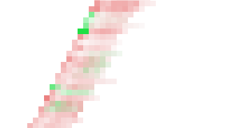
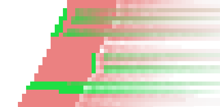
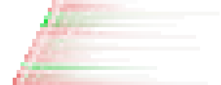

The Wind filter can be used to create motion blur, but it can also be used as a general distort filter. What is characteristic about this filter is that it will render thin black or white lines. Wind will detect the edges in the image, and stretch out thin white or black lines from that edge. This is why you can create the illusion of motion, because the edges are what will be blurred in a photograph of a moving object.

The interface is quite simple. You can set the
Strength of the wind and a
Threshold value. Threshold
will restrict the effect to fewer areas of the image.
Strength controls the amount of wind, so a high
value will render a storm. You can also increase the effect by setting
the Style to Blast, which will produce thicker
lines than Wind.
You can only set the wind in two directions, either Left or Right. However, you can control which edge the wind will come from using the values Leading, Trailing or Both. Because Trailing will produce a black wind, it creates a less convincing motion blur than Leading, which will produce white wind.
The following illustrations are based on this image:

- Presets, “Input Type”, Clipping, Blending Options, Preview, Merge filter, Split view
-
![[Note]](images/note.png)
Note These options are described in Section 2, “Common Features”.
- Style
-
- Wind
-
This option is the most suggestive of a moving effect. Trails are thin.
- Blast
-
This option tries to suggest a blast due to an explosion. Trails are thick.

- Direction
-
You can select the direction, Left or Right, from which the wind comes.
- Edge Affected
-
- Leading
-
Trails will start from the front border, falling on the object itself. It suggests that a violent wind is pulling color out.

- Trailing
-
Trails start from the back border of the object.

- Both
-
Combines both effects.

- Threshold
-
The threshold to detect borders. The higher it is, the fewer borders will be detected.
- Strength
-
Higher values increase the strength of the effect.
- Random seed, New Seed
-
This option controls the randomness of the filter. The Random seed box lets you manually enter a seed for the randomization algorithm used. You can also generate a random seed by pressing the button. If the same random seed is used in the same situation, the filter produces exactly the same results. A different random seed produces different results.